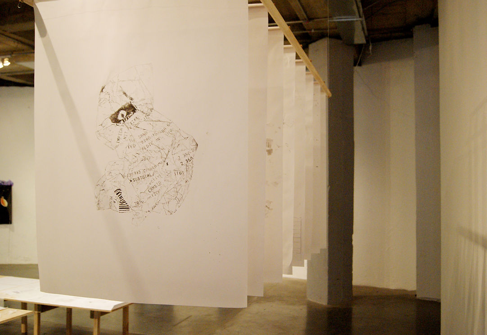
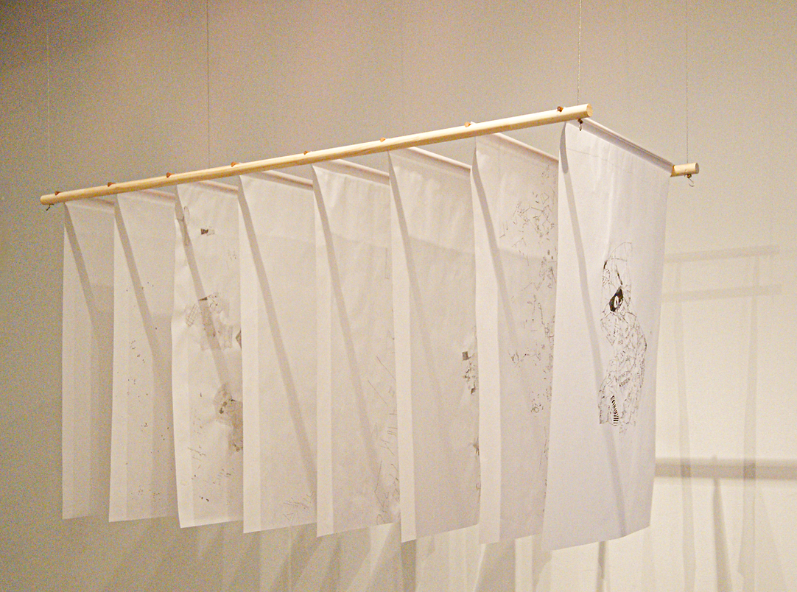
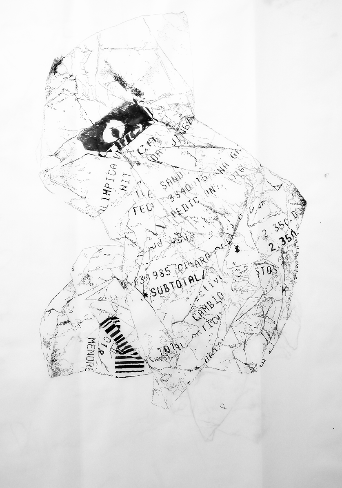
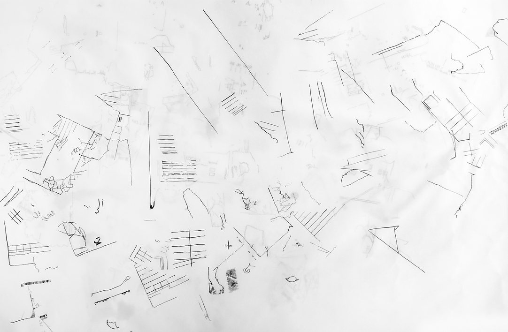
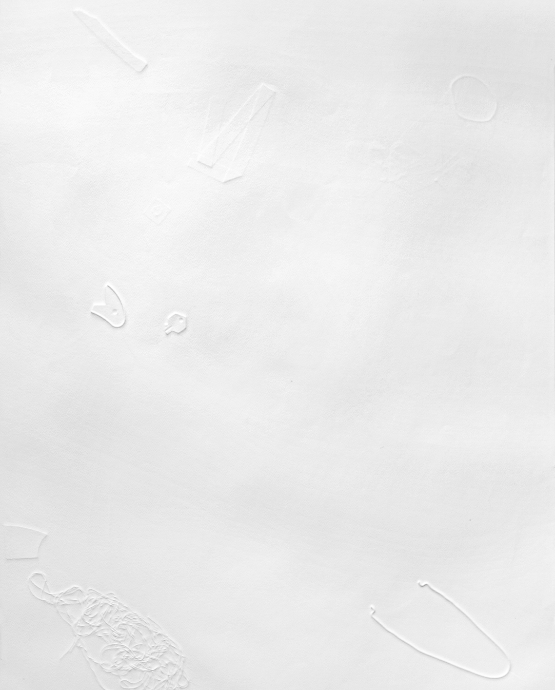

La línea no es recta
Espacio Odeón, Bogotá.
Este proyecto explora las clasificaciones, la deriva y los objetos encontrados. Para llevarlo a cabo, me sumergí en textos que examinan el coleccionismo a lo largo de la historia, y cómo las clasificaciones están vinculadas a una tradición de expediciones botánicas. "El Systema Naturae de Linneo construye un archivo completo que recopila las estructuras de plantas y métodos para recolectarlas y organizarlas en herbarios (...) este estudio de lo natural se basó no solo en la exportación, sino que también empleó diversas herramientas como cartas de navegación, mapas, ilustraciones y, especialmente, ilustraciones botánicas o láminas".
De este contexto surgieron diversas piezas que componen este proyecto, entre ellas, "Mapas Residuales". Esta obra consta de ocho dibujos en formato de pliego, realizados con tinta sobre papel pergamino. Resultaron de la reproducción detallada de residuos que fui recolectando a lo largo de seis meses. Al crear nuevas agrupaciones, decidí establecer categorías en el momento mismo de dibujar, como líneas, ceros, siluetas de los papeles, etc. El primero de ellos es el dibujo de un recibo arrugado, y los organicé de manera que se generara una lectura "en capas".
El dibujo se convierte en un calco. Estos mapas son representaciones de ideas sobre una percepción parcial del espacio y el territorio, guiada por diferentes intereses (económicos, políticos, geográficos, topográficos). Este archivo móvil propone una revisión con un enfoque diferente: no es el espacio en sí mismo, sino lo que se encuentra en él, elementos que casualmente simulan la línea cartográfica.
Se pueden observar elementos más claros que otros, revelando las múltiples formas que adoptan después de su vida útil, la cual mayormente consistía en almacenar o comunicar información. Se distinguen recibos, trozos de papel con márgenes, números anotados, etc. Los dibujos se disponen uno detrás de otro, desvaneciendo una lectura frontal. Solo es posible observar el primero y el último, y el resto desde los lados.
A partir de este ejercicio, surgieron otros 20 dibujos en diferentes formatos y 2 intaglios.


“Mapas Residuales”. Instalación 180 x 50 cms. 8 dibujos 70x00 cms c/u. Palos, tinta sobre papel pergamino.


Detalle. Serie de dibujos. tinta sobre papel. Dimensiones variables. 2018.

Sin título. Intaglio en papel. Dimensiones variables. 2018.